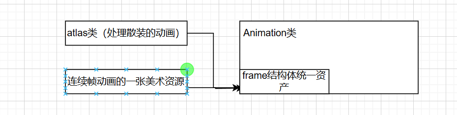

处理不同形式角色动画资产的Animation管理器
对于一些美术资产我们常常会遇到俩种形式
1.首先处理的每帧一张图片的动画资源
我们选择了使用atlas类进行整合
#include <vector>
#include <graphics.h>
class Atlas
{
public:
Atlas()=default;
~Atlas()=default;
//根据路径名字和图片数量加载图片，同时存入img_list（IMAGE的vector）中
void load(LPCTSTR path_template, int num)
{
img_list.clear();
img_list.resize(num);
TCHAR path_file[256];
for (int i = 0; i < num; i++)
{
_stprintf_s(path_file, path_template,i + 1);
loadimage(&img_list[i], path_file);
}
}
//清空数组
void clear()
{
img_list.clear();
}
//获取帧动画的数量
int get_size()const
{
return (int)img_list.size();
}
//获取对应帧索引的图片指针（IMAEG*）
IMAGE* get_image(int idx)
{
if (idx < 0 || idx >= img_list.size())
return nullptr;
return &img_list[idx];
}
//添加对应的图片，用于翻转图片的时候生成翻转图集
void add_image(const IMAGE& img)
{
//复制构造函数放入，所以放入的可以是临时变量
img_list.push_back(img);
}
private:
std::vector<IMAGE> img_list;
};
利用规律的命名以及图片数组将一个动画所需的所有帧整合到一个atlas类中，并且给出了对应的工具函数
在本项目中我们将atlas视为管理动画资产的一种方式
在渲染上我们进一步使用Animation去管理对应的动画帧，在Animation中我们对于美术资产形式atlas（散装的动画帧）和连续帧动画的美术资产统一了绘制形式Frame类
我们都将其转换为Frame然后统一绘制
2.对于一张图片的连续动画集我们选择从绘制方法和frame类解决
首先在绘制方法上我们首先选择裁剪图片的方式绘画
inline void putimage_ex(IMAGE* img, const Rect* rect_dst, const Rect* rect_src = nullptr)
{
static BLENDFUNCTION blend_func = { AC_SRC_OVER ,0,255,AC_SRC_ALPHA };
AlphaBlend(GetImageHDC(GetWorkingImage()), rect_dst->x, rect_dst->y, rect_dst->w, rect_dst->h,
GetImageHDC(img), rect_src ? rect_src->x : 0, rect_src ? rect_src->y : 0,
rect_src ? rect_src->w : img->getwidth(), rect_src ? rect_src->h : img->getheight(), blend_func);
}
形参（绘制的image指针，绘制在对应窗口的矩形位置，对应图片的裁剪位置）
当裁剪位置的Rect指针为空时候表明不需要裁剪
然后对于帧动画形式我们创建统一的类Frame
struct Frame
{
Rect rect_src; //需要的裁剪矩形
IMAGE* image = nullptr; //对应的图片资源
Frame() = default;
Frame(IMAGE* image,const Rect& rect_src)//构造函数
:image(image),rect_src(rect_src){}
~Frame() = default;
};
统一了每一帧动画的绘制形式，表明了我们需要将atlas（散装动画集合）和image（一张图片的动画图集）都转换为frame，然后放入
Animation的frame_list统一绘制
将atlas转换为frame
void add_frame(Atlas* atlas)
{
for (int i = 0; i < atlas->get_size(); i++)
{
IMAGE* image = atlas->get_image(i);
int width = image->getwidth();
int height = image->getheight();
Rect rect_src;
rect_src.x = 0, rect_src.y = 0;
rect_src.w = width, rect_src.h = height;
frame_list.emplace_back(image, rect_src);
}
}
显然由于atlas是散装的不需要裁剪，所以rect_src就是图片的原点和宽高
将image（连续帧的图）转换为frame
void add_frame(IMAGE* image, int num_h)
{
int width = image->getwidth();
int height = image->getheight();
int width_frame = width / num_h;
for (int i = 0; i < num_h; i++)
{
Rect rect_src;
rect_src.x = i * width_frame, rect_src.y = 0;
rect_src.w = width_frame, rect_src.h = height;
frame_list.emplace_back(image, rect_src);
}
}
显然就是我们需要传入其动画帧的数量，然后根据序号然后计算出对应的裁剪矩形生成对应的fraem
这里补充一点
vector的push_back实现是调用复制构造函数，复制一份传入的对象然后放入vector
而emplace_back是调用构造函数放入vector，所以传入对应实例化类的构造函数参数就可以了
通过这样的方法，俩种不同的美术资产形式就统一成一种frame形式，也就方便了后面绘制的使用也是十分方便。